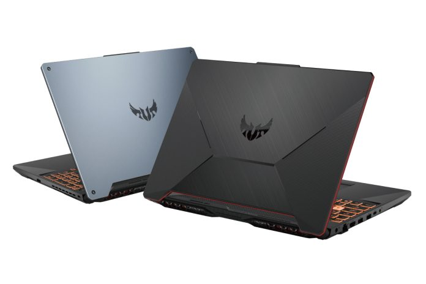

Asus TUF A15
Technical Specs
Processor : AMD 4000 Series- Ryzen 4600H /Ryzen 4800H
Screen Size : 15.6 inch
True Tone : No
Storage : 256GB SSD+1TB HDD/ 512GB SSD
Graphics : Nvidia GTX 1650 / Nvidia GTX 1650 Ti /Nvidia GTX 1660 Ti/ Nvidia RTX 2060
RAM : 8GB/ 16GB
Keyboard : Keyboard with RGB backlight
Ports : 1 HDMI, 1 Charging Port, 3 USB, 1 USB-C, SD Card Slot
Review
The Asus TUF series lineup has been a popular gaming device for quite some time now. The Rugged design and sturdy body gives it a fresh look. Yet this laptop remains a gaming laptop as it is packed with performance. Previously, the Asus TUF series laptops were Intel based, but this year they have gone the AMD route. With AMD's launch of new 4000-series Ryzen processors, the monopoly of Intel is looking to fade away. These new Ryzen chips have 6 and 8 core options at price range never heard of. The 8-core processor beats all the taks compared to Intel's option. This makes it a great processor for the new TUF series laptops. The best thing about this is, the laptops are still affordable even with 8 cores and RTX 2060 in it. The base range starts from $799. The Asus TUF A15 is looking up to be a great laptop for many, as many are looking for a high-performance gaming laptops within their budget. Check out the Asus TUF A15 in the link below.
Amazon Link: View